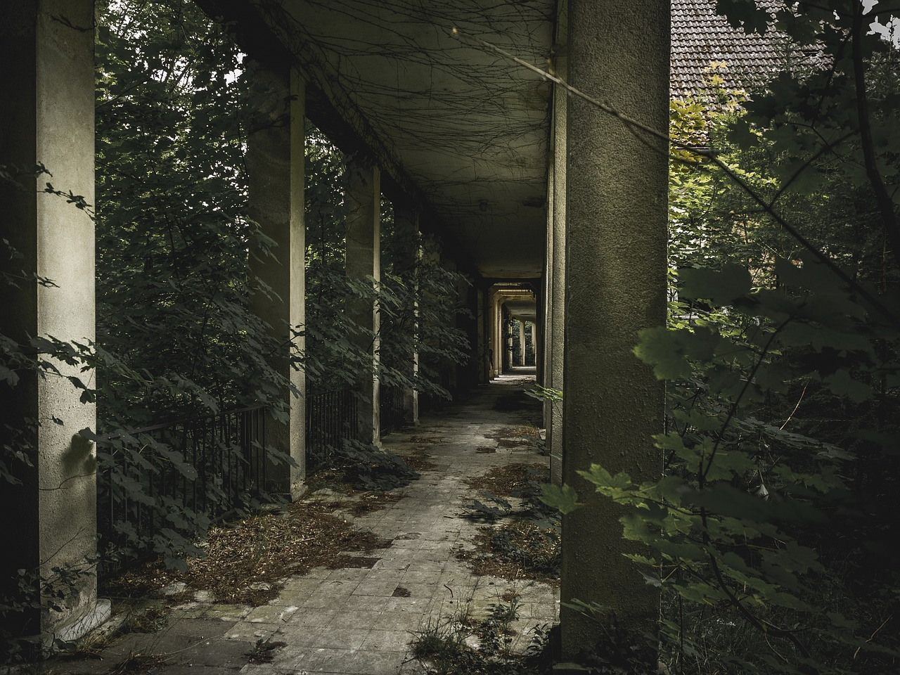
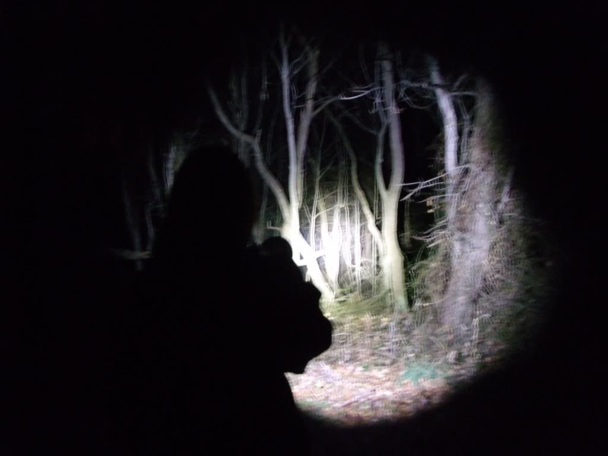

Sou Lucas, um jovem aventureiro que decidiu explorar uma área remota e misteriosa chamada **** . Não há muitas informações sobre o local, mas as histórias que ouvi são suficientes para enviar arrepios pela minha espinha. Ainda assim, minha curiosidade incontrolável me impulsiona a seguir em frente.

A escuridão envolve tudo ao meu redor. O ar está pesado e há um silêncio assombroso, quebrado apenas pelo som dos meus passos. A cada passo, sinto um calafrio percorrer minha espinha, como se estivesse sendo observado por olhos invisíveis.A noite cai rapidamente, e me vejo iluminando o caminho com uma lanterna tremeluzente. Cada sombra se torna ameaçadora, cada som me faz pular. A sensação de estar sendo seguido é constante, e minha mente começa a pregar peças em mim.
À medida que os dias se transformam em noites insones, meu sono é preenchido por pesadelos vívidos e perturbadores. Noites sem fim me deixam confuso sobre a passagem do tempo. Estou preso em um turbilhão de incertezas, sem saber se estou realmente caminhando em círculos ou se estou progredindo em direção a uma saída.
